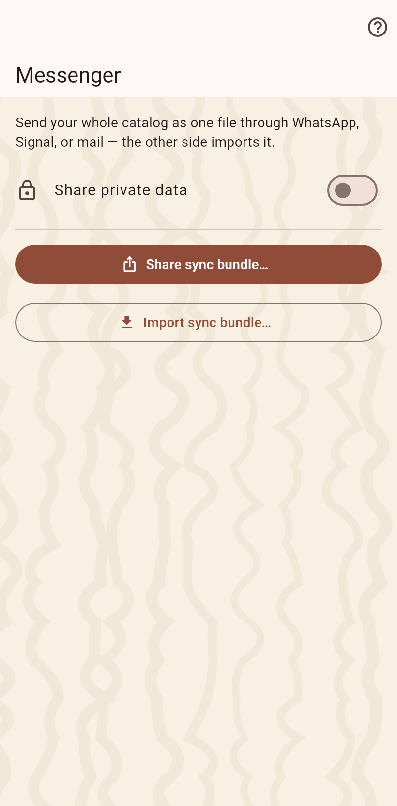

Sync as a file: this device writes a bundle with everything it knows, you send it through any messenger or mail, and the other side imports it.

The bundle is a .catsync file with every entry and every photo; private values only when the switch says so. The share sheet takes it to the messenger.
Open the file from the messenger: the app asks which catalog it goes into, or makes a new one, records a moment, imports what is new and opens the arrival page. A bundle a partner sent twice changes nothing the second time.